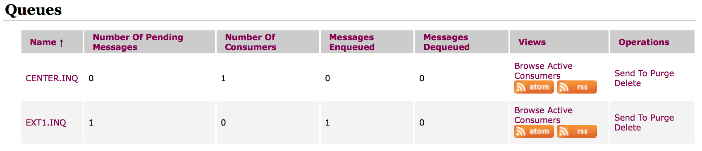

多个ActiveMQ Broker实现互相连接
需求
最近遇到一个使用 Active MQ 进行通讯的需求：
实现方式
如果使用 IBM WebsphereMQ 的话可以用远程队列和本地队列的方式将多个队列管理器连接起来实现。查了一下在 Active MQ 似乎没有远程队列的概念。但可以用 Network connector 实现类似的功能。以下以数据中心与外联机构 1 的连接为例说明实现的思路：
CenterBroker 的配置
- 修改 activemq.xml，在 broker—>transportConnectors 节点下修改那么 name 为 openwire 的 transportConnector 为
1
<transportConnector name="openwire" uri="tcp://0.0.0.0:61616?maximumConnections=1000&wireFormat.maxFrameSize=104857600"/> - 修改 activemq.xml，在 broker 节点下增加以下信息
1 2 3 4 5 6 7
<networkConnectors> <networkConnector name="CENTER.EXT1.Bridge" uri="static:(tcp://localhost:61626)"> <staticallyIncludedDestinations> <queue physicalName="EXT1.INQ"/> </staticallyIncludedDestinations> </networkConnector> </networkConnectors>
其中 staticallyIncludedDestinations 部分限制了只有发往 EXT1.INQ 的消息才会被转到ExtBroker1ExtBroker1 的配置
- 修改 activemq.xml，在 broker—>transportConnectors 节点下修改那么 name 为 openwire 的 transportConnector 为
1
<transportConnector name="openwire" uri="tcp://0.0.0.0:61626?maximumConnections=1000&wireFormat.maxFrameSize=104857600"/> - 修改 activemq.xml，在 broker 节点下增加以下信息
1 2 3 4 5 6 7
<networkConnectors> <networkConnector name="EXT1.CENTER.Bridge" uri="static:(tcp://localhost:61616)"> <staticallyIncludedDestinations> <queue physicalName="CENTER.INQ"/> </staticallyIncludedDestinations> </networkConnector> </networkConnectors>
同样，其中 staticallyIncludedDestinations 部分限制了只有发往 CENTER.INQ 的消息才会被转到CenterBroker 。
验证配置信息
- 重新启动 CenterBroker 和ExtBroker1
- 打开 CenterBroker 的 web 控制台可以看到自动创建了一个 EXT1.INQ , 同时可以注意到 Number Of Consumers 为 1，说明已经有一个消费者了。这时候把 ExtBroker1 停掉，你会发现 Number Of Consumers 变成为 0 了。说明这个队列的 Consumer 就是ExtBroker1。
{<2>} - 同样打开 ExtBroker1 的 web 控制台也能看到自动创建了一个 CENTER.INQ 的队列。
看到这些就说明配置成功了。
测试
接下来，我们测试一下从 CenterBroker向 ExtBroker1 的 EXT1.INQ 发送报文：
Tester.java
1
2
3
4
5
6
7
8
9
10
11
12
13
14
15
16
17
18
19
20
21
22
23
24
import org.apache.activemq.ActiveMQConnectionFactory;
import org.apache.activemq.command.ActiveMQQueue;
import javax.jms.*;
/**
* Created by newroc@gmail.com on 14-5-15.
*/
public class Tester {
public static void main(String[] args) {try {QueueConnectionFactory QCF = new ActiveMQConnectionFactory("tcp://127.0.0.1:61616");
Queue ext1Q = new ActiveMQQueue("EXT1.INQ");
QueueConnection centerConn = QCF.createQueueConnection();
centerConn.start();
QueueSession centerSession = centerConn.createQueueSession(false, Session.AUTO_ACKNOWLEDGE);
QueueSender centerSender = centerSession.createSender(ext1Q);
TextMessage message=centerSession.createTextMessage("测试报文,from Center to ext1");
centerSender.send(message);
}catch(Exception e){e.printStackTrace();
}
}
}
- 执行以上测试代码后你会发现 CenterBroker 的 Messages Enqueued 和Messages Dequeued均为 1，Number Of Pending Messages为 0，说明该队列曾收到了一个消息，并且该消息已经被取走了。
{<3>} - 然后打开 ExtBroker1 的 web 控制台，你会发现，Number Of Pending Messages为 1，查看消息内容确定是从 CenterBroker 发过来的消息。
{<4>}
{<5>}
说明这种方式可以实现需求。